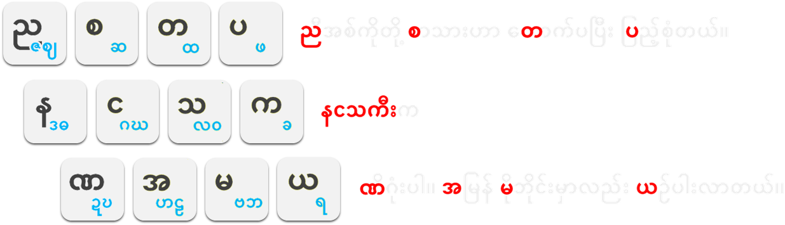
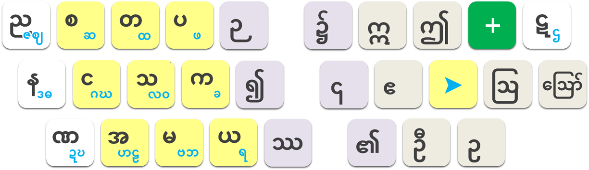

1시작하기
설치 과정이 따로 없습니다. 파일을 한 폴더에 두고 실행하면 끝입니다.
- 배포 폴더 안의 파일을 모두 같은 폴더에 둡니다.
nangathakey_beta.exe,pc_map.png,pc_plus.png,logo.ico(그림 파일이 없으면 화면 키맵이 뜨지 않습니다) nangathakey_beta.exe를 실행합니다. 화면 오른쪽 아래 작업표시줄 트레이에 낭아타키 아이콘이 나타납니다.- Windows 입력 언어를 영어(English)로 둡니다. 한글 IME 등 다른 입력기가 켜져 있으면 낭아타키가 동작하지 않습니다.
- CapsLock을 누르면 미얀마어 입력이 시작됩니다.
2켜기와 끄기
CapsLock이 낭아타키 스위치입니다.
| 누르는 키 | 동작 |
|---|---|
| CapsLock | 낭아타키 켜기 / 끄기. 켜면 화면 아래에 키맵이 나타납니다. |
| Shift + CapsLock | 원래의 CapsLock(영문 대문자 고정)이 필요할 때 사용합니다. |
| 트레이 아이콘 우클릭 | 현재 켜짐/꺼짐 상태 확인, 키맵 자동 표시 설정, 종료(Exit). |
트레이 메뉴는 실제 사용자를 위해 미얀마어로 표시됩니다. ဖွင့်ထားသည် = 켜짐, ပိတ်ထားသည် = 꺼짐, ကီးဘုတ်ပုံ (HUD) အလိုအလျောက် ပြရန် = 키맵 자동 표시.
3화면 키맵(HUD)
낭아타키가 켜져 있으면 화면 아래쪽 가운데에 자판 그림이 떠서 입력을 도와줍니다.
4자음과 ▶ 키
미얀마 자음 33개를 왼손 13개 키에 모양이 닮은 것끼리 묶어 두었습니다. 키를 누르면 그 묶음의 첫 글자(검은 글자)가 나오고, K(▶)를 누를 때마다 다음 글자(파란 글자)로 바뀝니다.

끝 글자에서 ▶를 한 번 더 누르면 첫 글자(င)로 돌아옵니다.
외우는 요령
줄마다 첫 글자를 이어 읽으면 미얀마어 문장이 됩니다. 문장 하나로 한 줄을 통째로 외울 수 있습니다.

5모음·부호 키
오른손 쪽은 모음과 부호입니다. 한 키에 여러 개가 있으면 같은 키를 연달아 누를 때마다 다음 것으로 바뀝니다.
| 키 | 1번 | 2번 | 3번 | 설명 |
|---|---|---|---|---|
| U | ◌ိ | ◌ီ | ◌ဲ | 윗모음 |
| I | ◌် | ◌ံ | 아따(받침) / 땅찐 | |
| J | ေ◌ | 자음 앞에 먼저 칩니다 (6장) | ||
| L | ◌ာ | ◌ါ | 아 모음(짧은 꼬리 / 긴 꼬리) | |
| ; | ◌း | ◌့ | 성조 부호 | |
| M | ◌ှ | ◌ွ | 아래 결합 부호 | |
| , | ◌ု | ◌ူ | 아랫모음 | |
| . | ◌ြ | ◌ျ | 둘러싸는 결합 부호 |
6ေ 는 먼저 친다
ေ는 발음은 자음 뒤에 나지만 글자는 자음 앞(왼쪽)에 적힙니다. 낭아타키에서는 눈에 보이는 순서대로 J(ေ)를 먼저 치고 자음을 칩니다. 컴퓨터 내부의 올바른 순서로는 입력기가 알아서 바꿔 저장합니다.
자음 다음에 치는 결합 부호(. M)와 ▶ 키도 그대로 통합니다. 입력기가 결합 부호를 ေ 안쪽의 올바른 자리에 넣어 줍니다.
7+ 키: 겹자음과 특수문자
O(+)를 누르면 다음 한 글자 동안 + 키맵으로 바뀝니다. + 키맵은 자동 표시 설정과 상관없이 항상 화면에 나타납니다.

① 겹자음(아래로 쌓기)
O 다음에 자음 키를 누르면 그 자음이 앞 글자 아래에 붙습니다. 붙인 뒤에도 K(▶)로 묶음 안의 다른 글자로 바꿀 수 있습니다.
② 특수문자
| + 다음 키 | 글자 | + 다음 키 | 글자 |
|---|---|---|---|
| U | ဣ | I | ဤ |
| J | ဧ | L | ဩ |
| ; | ဪ | M | ဦ |
| , | ဥ | T | ဉ |
| Y | ၌ | G | ၍ |
| H | ၎ | B | ဿ |
| N | ၏ |
+ 모드를 취소하려면 O를 한 번 더 누르세요. + 모드에서 ▶ 키는 무시됩니다.
8문장부호
/와 ;는 바로 앞 글자가 미얀마 글자일 때만 미얀마 부호로 바뀝니다. 공백·숫자·영문·기호 뒤에서는 원래대로 /, ;가 입력됩니다.
/ : 쉼표 → 마침표 → 말줄임표
한 번 = 쉼표 ၊, 두 번 = 마침표 ။, 세 번 = 말줄임표 ..., 그 뒤로 누를 때마다 점이 하나씩 늘어납니다.
/로 되돌아갑니다. 마침표 단계까지 갔다면 일반 삭제입니다.; : 성조 부호
미얀마 글자 뒤에서는 း(한 번) / ့(두 번), 그 외에는 ;입니다.
9숫자
미얀마에서도 가격·전화번호·날짜에는 아라비아 숫자를 주로 쓰기 때문에, 기본은 아라비아 숫자입니다.
| 누르는 방법 | 결과 |
|---|---|
| 숫자 키를 짧게 톡 | 1 2 3 (아라비아 숫자) |
| 숫자 키를 0.35초 이상 꾹 | ၁ ၂ ၃ (미얀마 숫자) |
꾹 누르고 있어도 미얀마 숫자는 한 번만 입력됩니다. 0~9 모두 같습니다: ၀ ၁ ၂ ၃ ၄ ၅ ၆ ၇ ၈ ၉
10백스페이스 요령
대부분은 한 글자씩 지워지지만, ေ가 들어간 음절에서는 다시 고치기 쉽도록 지워집니다.
| 지금 화면 | BS 후 | 설명 |
|---|---|---|
| ကော | ကေ | 뒤에 붙은 모음부터 지웁니다. |
| ကြေ | ကေ | 결합 부호를 지웁니다. |
| ကေ | ေ | 자음만 빠지고 ေ는 남아 있어, 바로 다른 자음을 치면 됩니다. |
| ကား၊ | ကား/ | 쉼표 직후의 BS는 /로 되돌립니다 (8장). |
11따라 쳐 보기
메모장을 열고 아래 단어를 직접 쳐 보세요.
| 단어 | 뜻 | 키 순서 |
|---|---|---|
| ကား | 자동차 | F L ; |
| နေ | 해 | J A |
| မြန်မာ | 미얀마 | C . A I C L |
| ကော်ဖီ | 커피 | J F L I R K U U |
| ကျောင်း | 학교 | J F . . L S I ; |
| ဒုက္ခ | 고통 | A K , F O F K |
| ကမ္ဘာ | 세계 | F C O C K K L |
| မင်္ဂလာပါ | 안녕하세요 | C S I O S K D K L R L L |
12문제 해결
CapsLock을 눌러도 영문만 입력돼요.
화면 키맵이 안 보여요.
pc_map.png, pc_plus.png가 exe와 같은 폴더에 있는지 확인하세요.스페이스를 눌렀는데 공백이 안 들어가요.
숫자를 쳤는데 미얀마 숫자가 나와요.
/ 나 ; 를 그대로 쓰고 싶어요.
/를 얻을 수 있습니다. 영문이 많이 섞인 글이라면 CapsLock으로 잠깐 꺼 두는 것이 편합니다.대문자를 연속으로 쓰고 싶어요.
13한 장 요약
| 키 | 하는 일 |
|---|---|
| CapsLock | 낭아타키 켜기/끄기 (Shift+CapsLock = 원래 CapsLock) |
| 왼손 자음 키 | 자음 묶음의 첫 글자 |
| K ▶ | 방금 친 자음을 묶음의 다음 글자로 |
| U I L ; M , . | 모음·부호, 연타하면 다음 것으로 |
| J | ေ — 자음보다 먼저 |
| O + | 다음 자음을 아래에 겹치기 / 특수문자 |
| T Y G H B N | ဉ ၌ ၍ ၎ ဿ ၏ |
| / | ၊ → ။ → ... (미얀마 글자 뒤에서만) |
| 숫자 | 톡 = 아라비아, 꾹 = 미얀마 |
| Space | 공백 (키맵이 숨었을 땐 첫 번째는 키맵 부르기) |